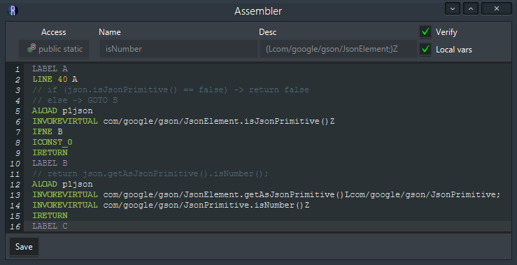

The Assembler
The assembler allows bytecode to be edited in a textual representation. It provides all the same functionality of the instruction list editor, with only a few minor caveats.
Controls
Across the top there are 5 controls that display the method definition & assembler flags.
The access button shows the access modifiers, clicking it will open a menu allowing you to change with flags apply.
The name textfield is self-explanitory.
The descriptor textfield lets you change the parameter and return types using the internal syntax.
Lastly there are the assembler flag checkboxes. The verify checkbox toggles verification of the bytecode you write. The local vars checkbox toggles emitting local variable debug information in the assembled code.
At the bottom, there's a save button. When an edit is made and no errors are present you can click the button to save your changes to the method. You are not just saving the instructions, recall that the local variable table is also being updated along with the access flags. Changes to the name and desc are also allowed, but they will not be reflected through the entire program when you save.
Code area
The code area is where the instructions are written. All instructions follow expected patterns (Listed below) and are syntax highlighted when they match. When an error occurs the line that caused the problem will be marked red. Hovering over the red mark will display a popup containing more information about the problem.
When writing instructions a list will appear at the end of the caret showing suggestions. If you wish to complete your statement with a suggestion you can press tab or enter to fill in the currently selected suggestion. The arrow keys can be used to navigate this list.
Additionaly you can use the Find keybind to open a search prompt.
Instructions table
| Instruction type | Applicable opcodes | Format |
|---|---|---|
| Field | GETFIELD, PUTFIELD, GETSTATIC, PUTSTATIC | <HOST>.<NAME> <DESC> Host: Class name, internal format Name: Field name Desc: Field descriptor, internal format |
| Iinc | Iinc | <VARIABLE> <OPERATION> <VALUE> Variable: Variable name or index Operation: Either + or - Value: Value to increment the variable by |
| Insn | NOP, ACONST_NULL, ICONST_M1, ICONST_0, ICONST_1, ICONST_2, ICONST_3, ICONST_4, ICONST_5, LCONST_0, LCONST_1, FCONST_0, FCONST_1, FCONST_2, DCONST_0, DCONST_1, IALOAD, LALOAD, FALOAD, DALOAD, AALOAD, BALOAD, CALOAD, SALOAD, IASTORE, LASTORE, FASTORE, DASTORE, AASTORE, BASTORE, CASTORE, SASTORE, POP, POP2, DUP, DUP_X1, DUP_X2, DUP2, DUP2_X1, DUP2_X2, SWAP, IADD, LADD, FADD, DADD, ISUB, LSUB, FSUB, DSUB, IMUL, LMUL, FMUL, DMUL, IDIV, LDIV, FDIV, DDIV, IREM, LREM, FREM, DREM, INEG, LNEG, FNEG, DNEG, ISHL, LSHL, ISHR, LSHR, IUSHR, LUSHR, IAND, LAND, IOR, LOR, IXOR, LXOR, I2L, I2F, I2D, L2I, L2F, L2D, F2I, F2L, F2D, D2I, D2L, D2F, I2B, I2C, I2S, LCMP, FCMPL, FCMPG, DCMPL, DCMPG, IRETURN, LRETURN, FRETURN, DRETURN, ARETURN, RETURN, ARRAYLENGTH, ATHROW, MONITORENTER, MONITOREXIT | n/a |
| Int | BIPUSH, SIPUSH, NEWARRAY | <VALUE> Value: Value to push on the stack |
| Jump | IFEQ, IFNE, IFLT, IFGE, IFGT, IFLE, IF_ICMPEQ, IF_ICMPNE, IF_ICMPLT, IF_ICMPGE, IF_ICMPGT, IF_ICMPLE, IF_ACMPEQ, IF_ACMPNE, GOTO, JSR, IFNULL, IFNONNULL | <LABEL_TITLE> Label title: Name of label to jump to on successful comparison |
| Label | LABEL | <LABEL_TITLE> Label title: Name of label identifier |
| Ldc | LDC | <VALUE> Value: Value to push on the stack. Types are indicated as they would be in source code. |
| Line | LINE | <LINE_NO> <LABEL_TITLE> Line number: Line number Label title: Name of label the line starts at |
| LookupSwitch | LOOKUPSWITCH | mapping[<MAPPING>...] default[<LABEL_TITLE>] Example: mapping[0=A, 1=B, 2=C] default[D] Mapping: Pairing of key value to a label title to jump to when the switch encoutners that value Default label title: Default label title to jump to when an unknown value is encountered |
| Method | INVOKEVIRTUAL, INVOKESPECIAL, INVOKESTATIC, INVOKEINTERFACE | <HOST>.<NAME><DESC> Host: Class name, internal format Name: Method name Desc: Method descriptor, internal format |
| MultiANewArray | MULTIANEWARRAY | <TYPE> <DIMENSION> Type: Type of array to create, internal name Dimension: Number of dimensions for the array |
| TableSwitch | LOOKUPSWITCH | range[<RANGE>] offsets[<LABEL_TITLE>...] default[<LABEL_TITLE>] Example: range[0-2] offsets[A, B, C] default[D] Range: Inclusive range of integers that map to labels given in the offsets group Offsets: Label titles that link with the range on a 1-to-1 basis. Default label title: Default label title to jump to when an unknown value is encountered |
| Var | ILOAD, LLOAD, FLOAD, DLOAD, ALOAD, ISTORE, LSTORE, FSTORE, DSTORE, ASTORE, RET | <Variable> Variable: Variable name or index |
Variable naming conventions
Variables in the assembler can be references multiple ways. The most simple way would be to use raw indices like 0, 1, 2, etc. However you can also use names like you would in source code. The keyword this is reserved for index 0. If you wish to reference named parameters of a method you can do so by prefixing the name with pN where N is the variable index of the parameter.
When using the pN format N starts at 1 regardless as if the this variable were always reserved.
Simply put, parameter variables are 1-indexed. They still account for wide variable types (See note on long/double below)
It is important to remember that double and long type variables (D and J internally) take up two spaces in the local variable table.
Example: A method descriptor of (IDD)V. If the method is static the variable this/0 not reserved, which means the variables are: 0, 1, 3
If the method was not static the variables would be: 1, 2, 4.
Limitations
The INVOKEDYNAMIC instruction is not supported.
In-line try-catches are not supported.
Variable types are recorded, but only for primitives using specific variable opcodes. Using ALOAD/ASTORE defaults to Ljava/lang/Object;.
Tab completion works for declared members only (Does not currently support references to members defined in parents of a given type)
For example, if you start with the type of awt's Graphics2D, declared members of the parent-class Graphics will not be tab-completed.